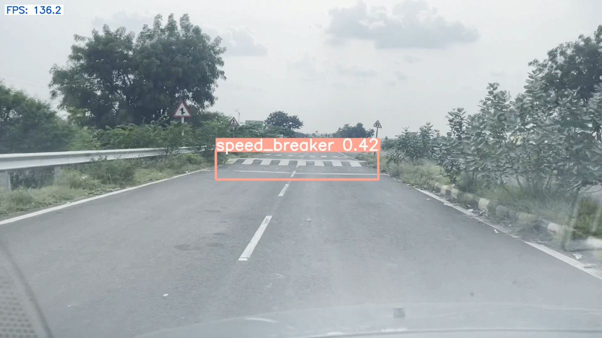
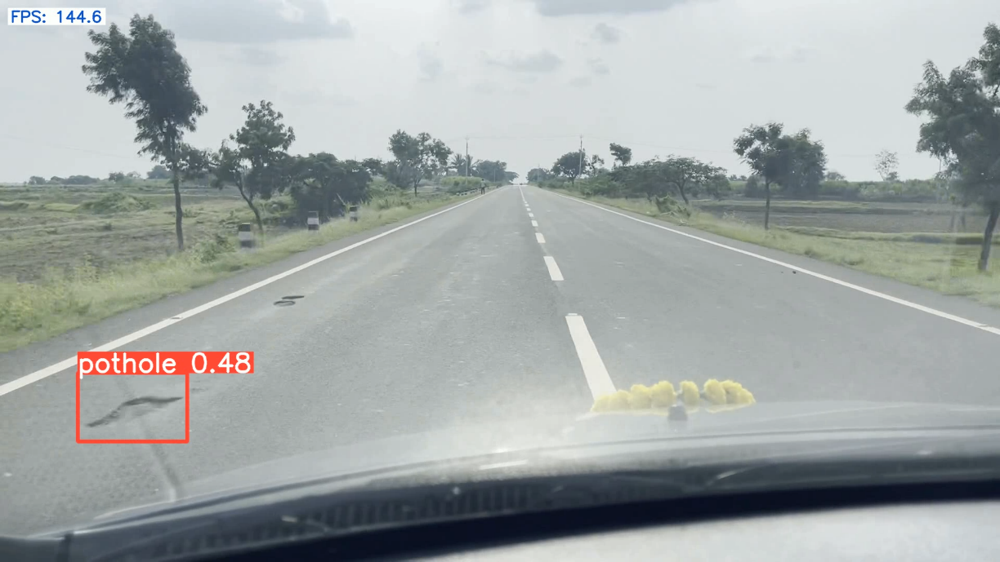
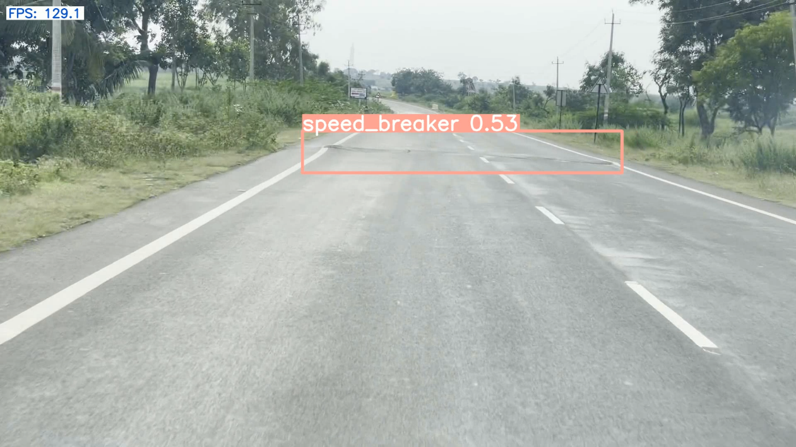
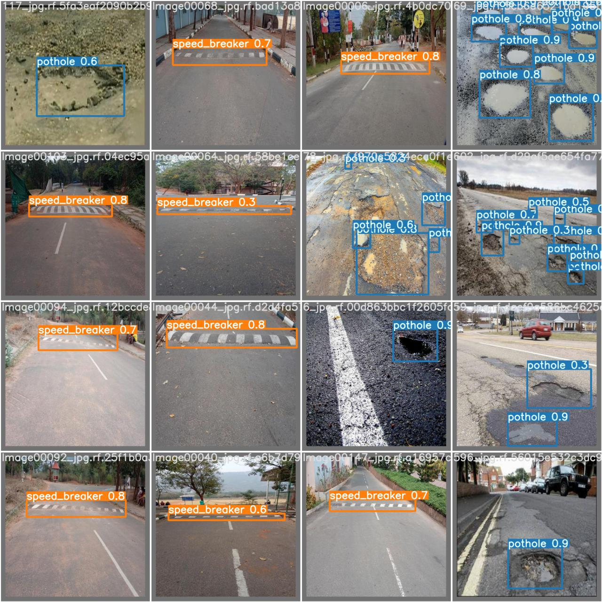
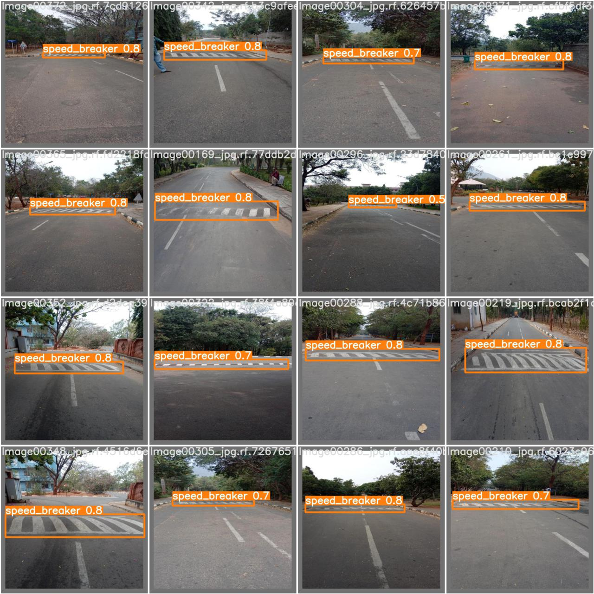
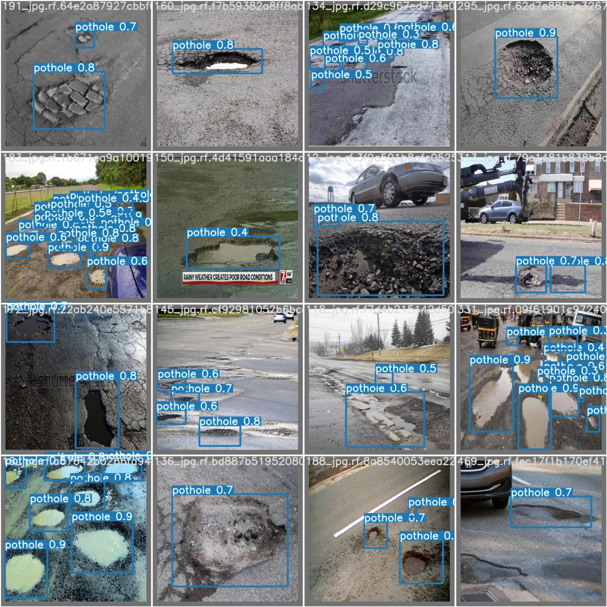

Camera based vehicle functions
Completed as a part of Bosch's PRIXEL program
Completed this project in collaboration with Bosch, as part of their prestigious PRIXEL program. Our team had developed a highly effective real-time pothole and speed breaker detection system using advanced object detection models.
Through this innovative technology, our system accurately identifies potential hazards on the road, enabling drivers to avoid them and reducing the risk of accidents caused by potholes and speed breakers. Our model is highly accurate and efficient, ensuring that even the smallest obstacles are detected with precision.
My team was proud to have contributed to the field of road safety with this groundbreaking project. With Bosch's support and our team's expertise, we've created a solution that has the potential to make a real difference in the lives of drivers.
Detection results




Test dataset


